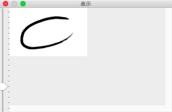

The View Window
This window show image of current document. This window dedicate to 'View'
So that, this window depiction is same as the Main Window.

Magnifying
As mentioned In the Main Window description, left side positioned slider is used when you want to change magnification.

When this slider move to above, zoom in on image. When this slider move to below, zoom out on image.


Since the mainly purpose of the view window that is 'view', allow interpolation when zoom out on image.
However, please note if be scrolling on the view window or be editing on the main window when zoom out on the view window, the view window depict slight different from complete view due to redraw a part of image with interpolated a part of image.